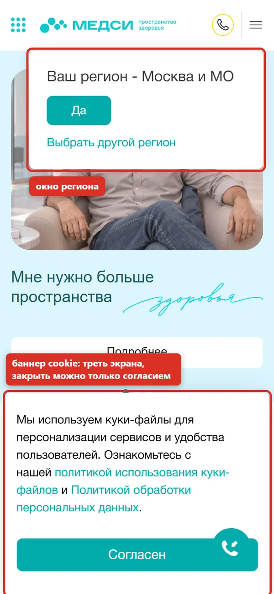
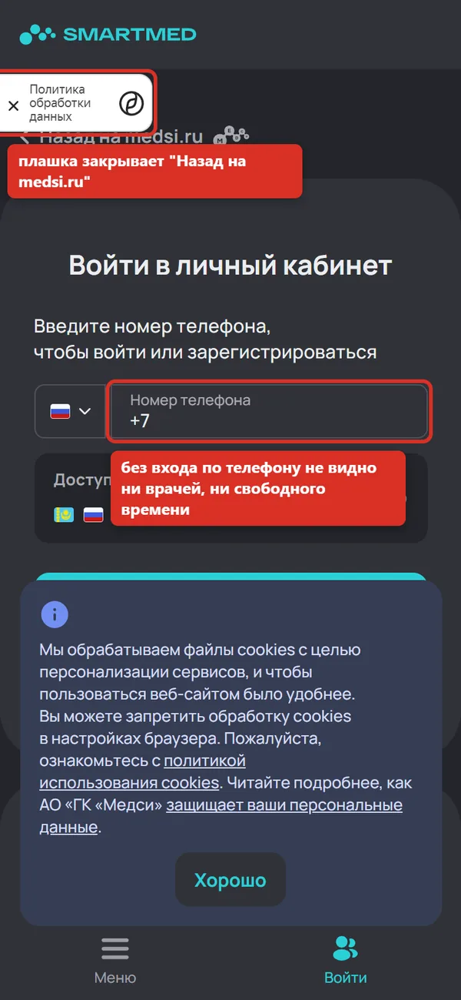
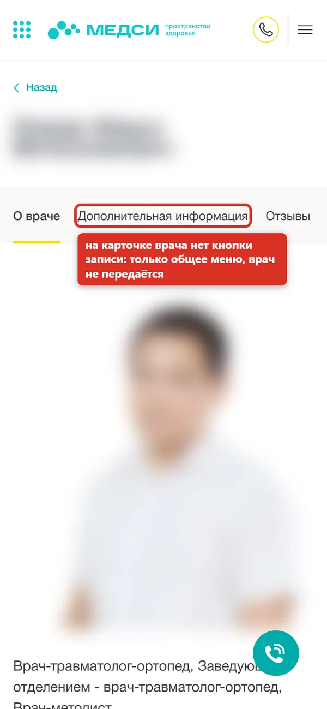
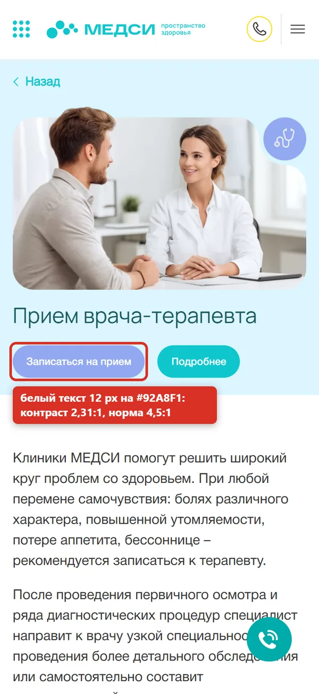
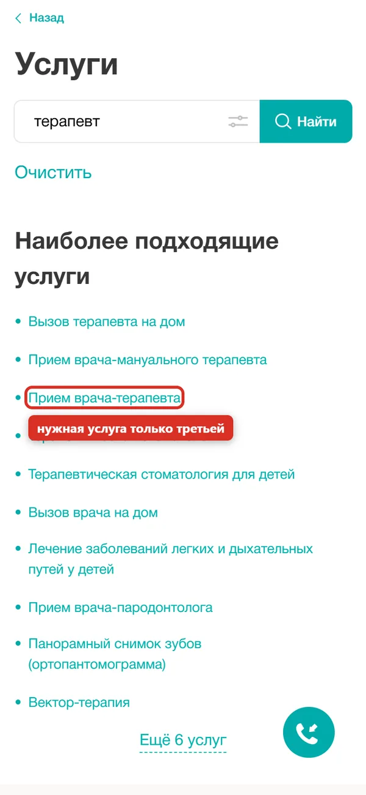
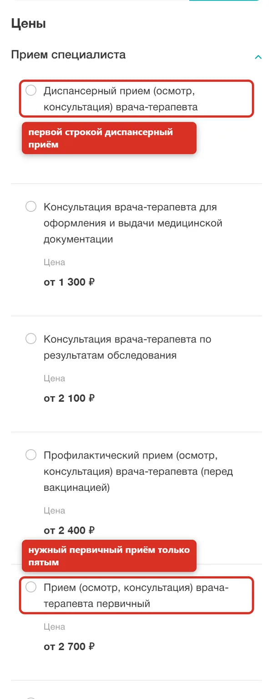

Запись к терапевту (с телефона)
Задача пользователя: "Хочу записаться к терапевту в Москве на ближайшую дату, с телефона".
Как проверяла: прошла сценарий как новый посетитель, на каждом шаге отмечала, что мешает и какую эвристику это нарушает. Куда ведёт кнопка записи на Android и iPhone, проверила по ответу сервера. На вводе телефона остановилась: персональные данные не вводила.
Путь:
- Главная medsi.ru
- Окно "Ваш регион": Москва
- Поиск услуг: "терапевт"
- Результаты поиска
- Страница "Прием врача-терапевта"
- Кнопка "Записаться на прием"
- Приложение или smartmed.pro
- Вход по номеру телефона: стоп
- Эвристики Нильсена
- Путь пользователя
- Мобильная версия
- Контраст WCAG
10
проблем на пути к записи4
высокой важности0
вариантов свободного времени до входа по телефону2,31:1
контраст кнопки записи при норме 4,5:1Сводка
| № | Проблема | Важность | Эвристики |
|---|---|---|---|
| 1 | На первом экране мобильной версии нет ни записи, ни поиска врача | Высокая | 8 |
| 2 | Кнопка "Записаться на прием" уводит с сайта в приложение | Высокая | 3, 7 |
| 3 | Запись начинается со входа по номеру телефона | Высокая | 3, 1 |
| 4 | На карточке врача в мобильной версии нет кнопки записи | Высокая | 6 |
| 5 | Кнопка записи на странице услуги бледная и мелкая | Средняя | 8 |
| 6 | Поиск по сайту ставит нужную услугу только третьей | Средняя | 1, 2 |
| 7 | В ценах нужный приём только пятой строкой | Средняя | 2, 8 |
| 8 | Кнопка звонка перекрывает кнопку "Согласен" | Средняя | 8 |
| 9 | Баннер cookie можно закрыть только согласием | Средняя | 3 |
| 10 | Резкая смена оформления при переходе к записи | Низкая | 4 |
Находки
#1 На первом экране мобильной версии нет ни записи, ни поиска врача
Что происходит
Первый экран занимают карусель с рекламой, окно "Ваш регион" и баннер cookie на треть высоты. Видимая кнопка "Записаться на прием" без открытия меню есть только в подвале: примерно через четыре экрана прокрутки (2 974 px при высоте экрана 812 px).
Почему это мешает
Человек пришёл записаться к врачу, а видит рекламу и два окна, которые надо закрыть. Главное действие сайта спрятано.
Что предлагаю
Поставить на первый экран поиск врача или услуги и кнопку "Записаться". Окно региона показывать компактно, без перекрытия контента.


#2 Кнопка "Записаться на прием" уводит с сайта в приложение
Что происходит
На телефоне все кнопки записи ведут на redirect.appmetrica.yandex.com. На Android сервер отвечает переходом intent:// в приложение ru.mts.smartmed без запасной веб-страницы: если приложения нет, откроется Google Play. На iPhone та же кнопка ведёт на сайт smartmed.pro.
Почему это мешает
Записаться прямо на сайте с телефона нельзя: вместо записи человеку предлагают ставить приложение. Часть людей на этом шаге уходит.
Что предлагаю
Оставить запись в браузере, а приложение предлагать после записи как удобство, а не как условие.
Android, ответ сервера (Location): intent://smartmed.pro/appointment/main?...#Intent;scheme=https; package=ru.mts.smartmed;S.market_referrer=...;end iPhone: 200, https://smartmed.pro/?referrer=appmetrica_tracking_id...
#3 Запись начинается со входа по номеру телефона
Что происходит
На smartmed.pro первым экраном идёт "Войти в личный кабинет: введите номер телефона". До входа не видно ни врачей, ни свободного времени, ни цены выбранного приёма.
Почему это мешает
Человек должен отдать номер телефона раньше, чем поймёт, есть ли подходящее время. Это барьер, особенно для тех, кто пока только сравнивает клиники.
Что предлагаю
Показывать врачей, расписание и цену до входа, а номер телефона спрашивать на последнем шаге, при подтверждении записи.


#4 На карточке врача в мобильной версии нет кнопки записи
Что происходит
В содержимом карточки врача кнопки "Записаться" нет. Записаться можно только через общее меню, и эта кнопка ведёт на общую запись, а не к выбранному врачу.
Почему это мешает
Человек нашёл врача, прочитал о нём и не может записаться к нему в один шаг. После входа в SmartMed врача придётся искать заново и помнить его фамилию.
Что предлагаю
Добавить на карточку кнопку "Записаться к этому врачу", которая открывает его расписание (передавать врача в ссылке).


#5 Кнопка записи на странице услуги бледная и мелкая
Что происходит
Кнопка "Записаться на прием": белый текст 12 px на светло-голубом фоне #92A8F1. Контраст 2,31:1 при норме WCAG 4,5:1. Соседняя кнопка "Подробнее" насыщеннее, и взгляд уходит на неё.
Почему это мешает
Главная кнопка страницы выглядит второстепенной, а людям со слабым зрением её трудно прочитать.
Что предлагаю
Сделать кнопку записи основной: насыщенный фон, контраст не ниже 4,5:1, текст не меньше 14-16 px.


#6 Поиск по сайту ставит нужную услугу только третьей
Что происходит
По запросу "терапевт" подсказок при вводе нет. После поиска несколько секунд пустой экран, затем "Прием врача-терапевта" идёт только третьим, после "Вызова терапевта на дом" и "Приема врача-мануального терапевта".
Почему это мешает
Самый частый сценарий, обычный приём терапевта, требует вчитываться в список. Без подсказок легко ошибиться.
Что предлагаю
Добавить подсказки при вводе и поднять основной приём специалиста в начало выдачи.


#7 В ценах нужный приём только пятой строкой
Что происходит
Первая строка цен: "Диспансерный прием" за 3 000 руб. Обычный "Прием врача-терапевта первичный, от 2 700 руб." стоит пятым. Цены начинаются с "от" без объяснения, от чего зависят. В списке до сих пор "Экспресс-диагностика коронавирусной инфекции".
Почему это мешает
Человек видит первую цифру 3 000 и думает, что это цена приёма. Устаревшая услуга снижает доверие к актуальности цен.
Что предлагаю
Первым ставить первичный приём, пояснить "от" (зависит от клиники и квалификации врача), убрать устаревшие услуги.


#8 Кнопка звонка перекрывает кнопку "Согласен"
Что происходит
Плавающая круглая кнопка звонка лежит поверх кнопки "Согласен" в баннере cookie на главной и на странице услуги.
Почему это мешает
Легко попасть не туда: вместо закрытия баннера начинается звонок. Это ещё и дефект вёрстки.
Что предлагаю
Поднимать плавающую кнопку над баннером, пока он открыт, или прятать её до согласия.
#9 Баннер cookie можно закрыть только согласием
Что происходит
В баннере одна кнопка "Согласен", крестика нет. Пока не согласишься, баннер закрывает нижнюю треть каждого экрана.
Почему это мешает
Человека вынуждают согласиться, чтобы нормально пользоваться сайтом.
Что предлагаю
Сделать баннер узкой полосой с крестиком или кнопкой "Только необходимые".
#10 Резкая смена оформления при переходе к записи
Что происходит
При переходе на smartmed.pro меняются название (SmartMed вместо Медси), тема (тёмная вместо светлой), появляется второй баннер cookie. Плавающая плашка "Политика обработки данных" закрывает ссылку "Назад на medsi.ru".
Почему это мешает
Похоже на переход на чужой сайт, а это снижает доверие на самом важном шаге.
Что предлагаю
Оформить запись в стиле medsi.ru и не перекрывать навигацию.
Что исправить первым
- оставить запись в браузере, без обязательной установки приложения;
- показывать врачей, свободное время и цену до входа по телефону;
- вынести поиск врача и кнопку записи на первый экран;
- добавить на карточку врача кнопку записи именно к нему.